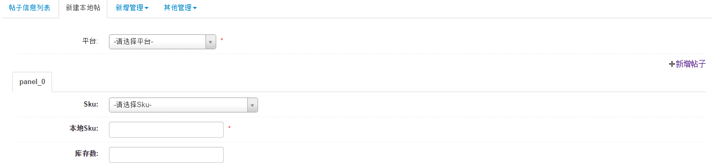

帖子编辑
帖子编辑包括新增母帖、新增普通帖、新增本地帖、复制贴、cross帖、修改帖子、删除帖子、帖子一键还原和帖子类型转换操作
帖子信息列表:
- 结果摘要列，将鼠标移至结果列会悬浮显示结果明细，每一操作结果第三位数字为0代表完全操作成功
- 详细结果文件列，最多有三种结果类型文件，编辑、类型和价格，点击即可下载结果文件，针对结果列失败结果下载相应文件查看即可知道失败原因
- 编辑帖子、新增本地帖和新增复制贴上传失败，点击编辑按钮可继续上传提交修改内容
- 点击查看亚马逊帖子信息链接查看亚马逊官网帖子显示情况，点击查看更多详情链接查看所有修改内容
新增管理:
- 新增母帖
- 点击新增父帖，支持批量新增父帖
- 填写母SKU时会判断是否存在相同母SKU
- 新增普通帖
- 点击新增帖子，支持批量新增普通帖
- 仅欧洲国家会出现设置同Asin选择框，选择设置同Asin，会设置选择Sku相同的基本信息；不选择设置同Asin，需自己手动填写红色标注的所有文本框
- 新增本地帖

- 点击新增帖子，支持批量新增本地帖
- 选择Sku，会设置选择Sku相同的基本信息；不选择Sku，需自己手动填写红色标注的所有文本框
- 复制帖
- 点击新增帖子，支持批量新增本地帖
- 仅欧洲国家会出现设置同Asin选择框，选择设置同Asin，会设置选择Sku相同的基本信息；不选择设置同Asin，需自己手动填写Asin、Sku等信息
- 选择复制Sku，会根据选择的Sku设置所有帖子相关内容。英语国家可以相互复制，其他国家复制本国sku帖子内容
- Cross帖
- 点击新增，支持批量新增Cross帖
- Cross Sku:其他欧洲国家的Sku，需要保证Sku和Cross Sku的part number一致才能保证cross成功
其他管理:
- 编辑帖子信息
- 选择平台，选择产品名称，点击全部Sku修改全部Sku帖子信息，点击单个Sku修改单个Sku帖子内容，点击全部Sku会覆盖已选择的单个子Sku
- Title是必填修改内容，选择修改内容子项会自动添加相应内容文本框，点击后面"-"号可以删除文本框，选择All，添加所有内容文本框
- 支持同一平台下多个Sku同时修改帖子内容
- 帖子类型转换
- 选择Sku，会根据选择的Sku设置Type,如果选择Sku是FBA帖，Type会自动默认成本地帖，同时查询出本地帖数量，如果选择Sku是本地帖，Type会自动默认成FBA帖
- 点击新增，支持同一平台下多个Sku同时类型转换
- 帖子一键还原
- 点击新增帖子，支持批量一键还原帖子
- 选择Sku，会设置选择Sku相同的基本信息；不选择Sku，需自己手动填写必填文本框
- 删除帖子

- 点击新增删除帖子，支持批量删除帖子
- 选择待删除的Sku，点击保存即可删除帖子